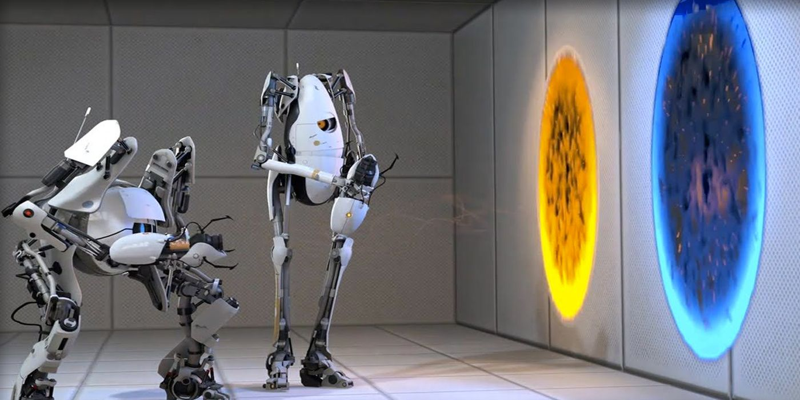
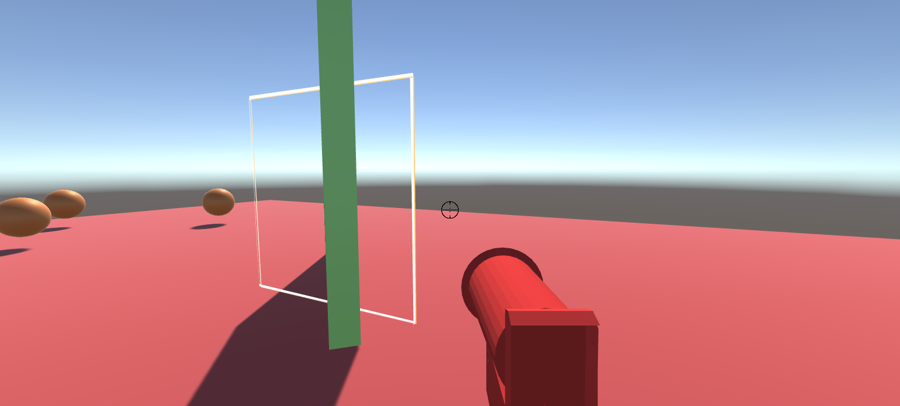
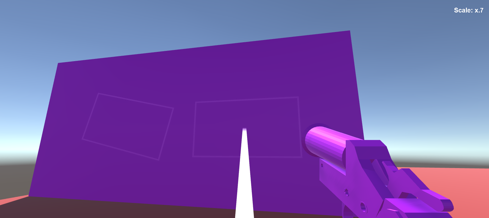
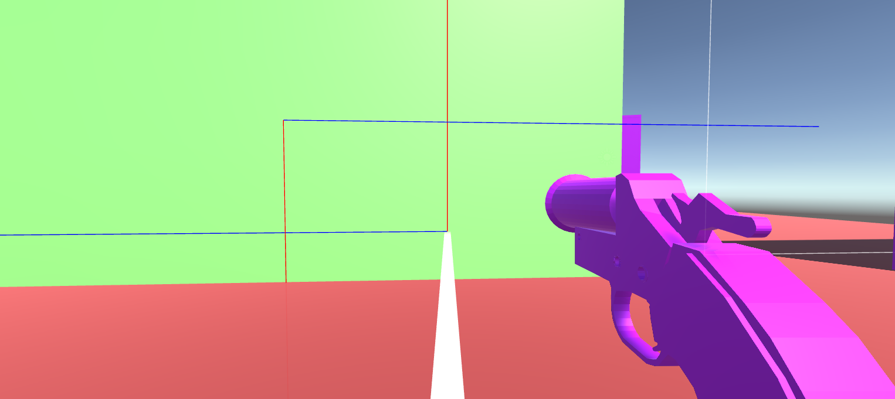

|  |
This project demonstrates the ability to create and interact with portals of varying sizes and placements in a 3D world. Portals are window/door-like inter-spacial objects that allow a user to peer or walk through to interact with the other pair. By working with camera movement, rendering, shaders, vector directions and rotations, and raycasting, this project demonstrates a seamless portal experience.
Check out a video of the project process below:
Imagine Valve’s Portal: a world where the user can create a portal anywhere and peer out into a different world.
Portal is a 2007 puzzle-platform game developed and published by Valve. It consists of a series of puzzles that must be solved by teleporting the player's character, using a device that can create inter-spatial portals between two flat planes. [1]
This project strives to put a modern twist on the classic concepts found in Valve’s Portal. Both from a graphics implementation and conceptual perspective, the idea of portals is incredibly intriguing.
This project is a demonstration of a world in which a user can create multiple portals and peer or walk through them to a different location, similar to Valve's Portal. However, this project extends further from the original video game to allow for the user to create portals of varying sizes and in any location. The idea behind having portals of different sizes is that they will scale the size of objects pass through them relative to the ratios of their area.
Our approach consists of 4 sections:
We created a first person controller script that will allow us to move a character sprite around the scene. We also created a gun with physical projectives, audio, and physics. Luckily we are part of the VR DeCal so we were able to steal the basic first person controller and gun from a homework we designed a couple semesters ago (really it's just from Unity's packages)[2]. Both these elements allow us to interact with the portals created later in the project and check that physics and momentum are conserved when moving through portals.
We then created manager scripts in order to give a general API and abstraction for portal creation, pairing, and rendering. These scripts set up the stage for debugging as we manually create and test our Portals class here.
There's a likely chance that the player is going to create portals in which they can view themself, so we also decided to add a character model with standard physics properties.
There is some interesting stuff we needed to do with game management involving pre-empting Unity’s colliders and using mutexes to ensure our state space machine behaved correctly with Unity’s concurrent event systems, but this is mostly general coding stuff that doesn’t reveal anything conceptually interesting. Just know that if you use triggers in Unity, be prepared for some weird behaviour when you teleport directly into another trigger. Often times you can get the pattern ENTER (1), ENTER (2), EXIT(1), EXIT(2) instead of what should happen when teleporting “in real life” trigger ENTER(1), EXIT(1), ENTER(2), EXIT(2)
The first thing we had to do was figure out how we wanted the portals to work under the hood. There are about 1000 different ways you can do portals, but we decided to basically pursue a camera rendering route where each portal has a camera that follows it's respective paired portal using local coordinate translation.
Suppose you are looking through Portal 1 at a 2 height, 3 width offset at a 60 degree angle (you = your fps model). For getting the correct camera view in respect to Portal 2, you need to translate these deltas to the other portal using local coordinates. Basically, you would want your paired camera to be at a 2 height, 3 width offset (and 60 degree angle) from Portal 2 with respect to the OPPOSITE normal. This gets into some weird math, but basically if you are in front of your Portal 1, you actually need your paired camera to be BEHIND portal 2 to get the correct viewpoint. This is a simple rotational matrix conversion, but it took a while to figure out and debug.
Just to make sure we are on the same page --> Each portal is going to have a paired camera that is generally behind it's paired portal. I'm going to link some videos showcasing our progress on this below, but it's important to understand that we have these paired cameras so that we can basically emulate our character standing there and render what you would be seeing if you had "preemptively" gone through the portal and could see the other side. There is some image cropping, texture mapping, and rendering stuff related to this we have to talk about later, but ultimately that's the main idea.
In order to get the view from each of these cameras onto the portals, we created a custom shader that was applied to the quad on each of the portals. We first set the output of each camera to a RenderTexture and applied these to each portal’s quad material. This naïve approach didn’t look quite right because it was applied the entire view of the camera to the portal, when we only wanted a cropped version of this with dimensions based on the direction and distance the player was looking at the portal from.
To fix this, we created a custom shader for the portals that would take the texture generated from the camera view, but instead of using the entire thing, it only used the part that corresponding to the UV coordinates of each position in screen space for the player. This gave us the cropping effect that can be seen in the third video below. With this custom shader, we were then also able to make the surface of the portals unlit so that they do not reflect light as if they were a flat wall.
We also took into account the fact that there could be objects in between the camera and the back of the portal that we did not want to be rendered. We solved this problem by changing the near clip plane of each of the cameras to be an oblique projection from the camera to the portal’s plane. This way it would only render objects in front of the portal which also allows us to place these portals directly onto walls without any clipping. The equation we used to solve for these oblique projections can be found in the sources below and is also cited in our code.
At this point, looking through portals looks very natural and convincing. However, there is still a problem if two paired portals are facing each other and you try to look at one of the portals through the other portal. Each frame, it shows the view of the paired portal from the previous frame which gives it this Windows XP Solitaire victory effect.
This problem necessitated rendering each portal’s view multiple times, and from different positions and angles. The algorithm works like this: Each frame, we calculate the appropriate position and rotation of the portal camera based on the position of the player. We then calculate the position and rotation again, but using the new position and rotation from the portal camera that we just calculated. We keep calculating this any number of times equal to the recursiveRenderLimit that we set. Naturally, this severally impacts performance, so we kept it somewhere between 5 and 10. Finally, we render the portal camera at each of these positions and rotations in reverse order (the view farthest away is rendered first, and the closest view that was the only one we were using previously is rendered last). This gives a very nice recursive portal effect that is similar to the effect you would get if you pointed two mirrors at each other.
Imagine a portal in real life. If someone were halfway through the portal, what would you see? You would see half of the person (different halves) from each side of the portal. In Unity, things are represented as GameObjects with components, so there is no easy way to “split someone in half”.
For the sake of this explanation, imagine we have portal A on the left and portal B on the right, and we are trying to move from A to B. The way we solved this problem is by cloning whatever object is walking through the portal A as soon as they hit its collider. So, quite literally, as soon as you, the player, collides with Portal A, there is a copy of you spawned near portal B. This copy is directly mapped to your movement and rotation relative to the original portal.
When you make it “halfway” through Portal A, we store the location of the clone, delete the clone, and then teleport you to that location. Following the abstraction above, now that we are physically inside Portal B, this will automatically spawn a clone back in Portal A where we started. This is exactly what we want! Whenever you exit the colliders (from either portal) delete the clone.
There were some rotational challenges with the clone, but ultimately this part of the project was really fun. We already have world space and local space translations figured out from camera movement so it wasn’t a massive issue.
I fibbed a bit earlier when talking about cloning. I suggested that there weren’t any problems with the above abstraction, but there kind of is. The texture we write to for the portal is a one sided quad mesh. When you “walk through” that mesh, the sudden change is very jarring. Unfortunately, our halfway calculation to determine when to teleport you allows a couple frames of this jarring transition when you’ve just passed halfway (so the other side of the quad) but you still haven’t teleported to the other portal.
How do you fix this? Deadzones! Basically we just adjust the “halfway” point of the portal to be slightly early relative to the quad’s normal. This makes it so you teleport a few frames earlier and get to avoid those jarring frames.
There is also a deadzone on the other side of the portal that is CAUSED by this deadzone. If you directly teleported to where the clone was given the above fix, you’d actually teleport ALREADY PASSED HALFWAY on the other portal, causing some weird back and forth teleportation issues. So we created another deadzone for teleporting that teleports you slightly more forward than directly where the clone is. It’s critical that this deadzone be larger than the previous, or you will always be passed halfway when you teleport.
Turns out I actually fibbed twice. When you create the clone on the other side, you only want to see half of the clone. In fact, you only want to see the half that is PREVIOUS HALFWAY on Portal A and B. I feel it helps me understand if I imagine sticking my arm through a portal. If you use the cloning implementation you would just have two arms on both portals. You need to cut different respective halves depending on which side you are on.
But Paxtan, you said we can’t cut GameObjects in half in Unity??? This one was a truth. Unfortunately, you can’t actually cut the object in half, so what you need to do is define a shader that takes in a plane as input and only renders things on one side of the plane.
This seems like it should be really easy to do, but it was actually very annoying. We took the shader from the Unity store, but unfortunately shaders aren’t really instanced. We can’t give 5 objects this shader and give each one their own plane and normal, because shaders are meant to be something that goes vertex by vertex or pixel by pixel without specific input for that object. Without getting super specific, we solved this by basically just keeping two copies of the shader alive and disabled in the scene when not in use and we attach it to the object that is being teleported right when interacting with the collider. This works because we should only ever need two of these shaders at one given time.
One of the reasons we did this project is that we wanted to add a twist to the original portal game that Valve created. We thought a fun way to do this was to add some kind of scaling.
Imagine you move through a 1x1 square portal into a 2x2 portal….. What should happen? We think you should get bigger. So we made that system with our portals! You can pair portals of different size and transform yourself by moving through them.
Now there are a couple of theoretical issues with this that we ran into… but I’m only going to talk about the most interesting one. What should you SEE when looking through a 1x1 portal into a 2x2 portal?
Whenever we were thinking about implementation specifics, it was always helpful to treat the portals as two halves of a window that you could stick back to back to understand what you should be able to see and be able to do. But now we have windows of different sizes??? There are a bunch of different ways to solve this. Originally, we wanted to maintain symmetry to the player by promising that WHAT YOU SEE THROUGH THE PORTAL is what you would see when WALKING THROUGH THE PORTAL. Unfortunately, when we implemented this it just didn’t look good. I know this isn’t a satisfying answer, but when we made a system that basically scaled the image to map the corners of the portal together (the same as the promise above) things just felt…. Wrong.
So we broke that promise and basically went back to our old system. When you look through a portal of size 1x1 into a portal of size 2x2, it’s exactly the same as the “window” implementation described earlier. You basically just get to see a subset of the 2x2 portal when looking through the 1x1 and you get to see more than the size of the 1x1 when looking through the 2x2. This looks the best by far, even though it’s symmetrically unsatisfying.
There were also a couple issues with determining whether we wanted to scale area or volume, but we decided that volume scales the player too quickly and decided to stick with surface area which plays a lot better than volume.
Most of this section is working with raycasting, planes, and vectors. To start off with, we know that the user will need to be able to select surfaces or points in the scene in order to create portals in-game. By creating a “line of sight” raycast, we can shoot a ray from the user’s position towards the direction of wherever the mouse position is. We can check if this ray hits any colliders at a certain range, or simply choose the point at the end of the ray. This line of sight is illustrated by rendering a line between two points: the user’s position and the ray’s hit or end point.
Given 4 points that make up where a portal will be, render an outline that signifies to the user where their portals will be placed. Update each frame as the user is still deciding placements.
We wanted the player to be able to create a portal by selecting two points on any surface or in air, which would then be outlined as a rectangle, and then be turned into a portal. Finding the other two points of this rectangle was a little difficult to figure out at first. We tried a number of different solutions, but ran into certain constraints (let’s assume the corner points are i and j):
We can’t create a rectangle with the other two points that are i’s y value and j’s x value, for example, because this is located in a 3D space and we have to work with a z-value. We would have to base the last two points off of the norm.
|  |
|  |
|  |
Once we’ve created our first portal from the above step, we can create our second portal with the dimensions. This makes placing the portal significantly easier, as we have access now to the height, width, midpoint (which will be the hit point of our line of sight), and norm (again, either the surface norm or, if the portal is placed in air, a vector pointing towards the player). Using orthonormalized vectors again, we add to the midpoint ½ of height and width to get all four corners.
If the portal placements are invalid, render the outline red and do not allow user to place portals.
How do we check the validity of portals? First, check that all 4 corners and the midpoint of the outline are on the same collider and have the same norm (so therefore the same surface). If that’s accurate, we also want to make sure we don’t place portals on top of each other. When we create our portal outline, we add a box collider and mark it as “Portal.” We also mark existing portals with a “Portal” tag and check that our box colliders do not make any collisions with any object that is Portal-tagged. This ensures that our new portals don’t overlap with each other nor existing portals.
The flow of Portal Creation is broken up into 4 different stages.
[1]https://en.wikipedia.org/wiki/Portal_(video_game)
[2] https://xr.berkeley.edu/decal/hw5
[3] https://math.stackexchange.com/questions/1568091/find-points-of-rectangle-given-two-diagonal-points-and-a-normal-in-3d
http://www.terathon.com/lengyel/Lengyel-Oblique.pdf
https://www.youtube.com/watch?v=riijspB9DIQ
https://www.youtube.com/watch?v=_SmPR5mvH7w&t=321s
Paxtan: